Organizing Payments
Engineering needed to rebuild Serasa’s agreements list because the legacy code kept crashing. The rebuild became the chance to fix something business had never prioritized: people could not find what they came to pay.
My role
- Research and discovery
- took a small part, 1 of 4
- Data analysis and a quick survey, building on usability research that already existed.
- Definition and strategy
- led, with input from others, 3 of 4
- The three pillars of the redesign, the new order of the list and what went into the details page.
- Design and systems
- shared the work, 2 of 4
- Card redesign and one vocabulary for web and app.
- Delivery and measurement
- led with full autonomy, 4 of 4
- Usability tests with 138 participants, final adjustments, stakeholder validation and the launch on web and app.
Problem
The agreements list is where people find the bank slips for the debts they have renegotiated. When it crashed, people could not pay, and Serasa lost revenue. That made the rebuild an engineering priority. Earlier research had also pointed to usability problems, but business had never prioritized them. In this project, better usability was a bonus, not the brief.
We asked people why they came to the page: 46% to pay, and 36% to check whether a debt had been marked as paid.
| Making a payment | 46% | |
|---|---|---|
| Checking if the debt was marked as paid | 36% | |
| Finding information about the agreement | 10% | |
| Getting a payment receipt | 4% | |
| Other | 4% |
The list made both jobs harder than they needed to be. There was no clear logic to the order, the cards were inconsistent and carried too much information, and web and app used different words for the same things.
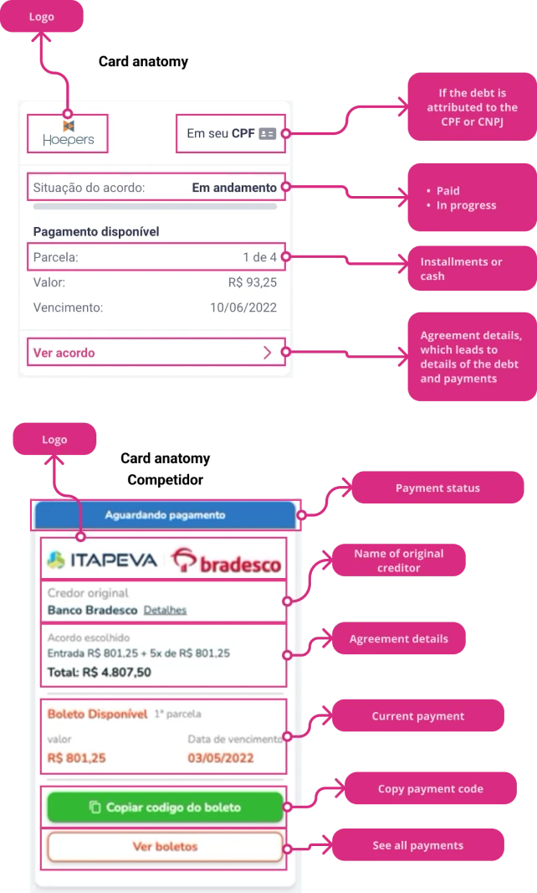
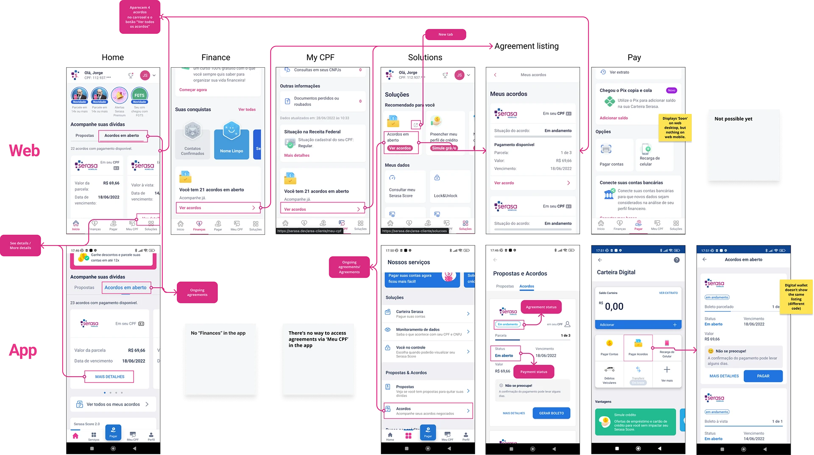
When we asked whether they could find what they were looking for, 31.7% said no. Most of them struggled to find options like renegotiating, printing the bank slip or checking payment confirmation. The information architecture and the labels needed revision.
| Yes | 68.1% | |
|---|---|---|
| No | 31.7% |
Constraints
The goal was set by engineering: fewer crashes. Every usability change had to fit inside that rebuild without putting it at risk.
Web and app had grown apart, each with its own words and its own version of the list. Serasa’s design system was only starting to exist, so some components were ready to use and many had to be improvised.
The upside of the rebuild was real, too. Because the list was moving to new, more robust code, the design was not limited by what the old code could do.
Decisions
The redesign rested on three pillars: status clarity, information hierarchy and scalability. If people can do what they came to do, they stay.
Before
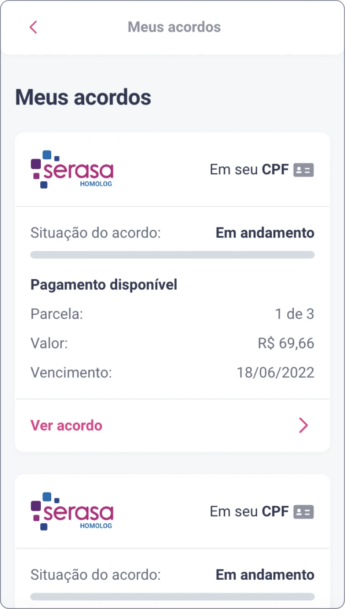
After
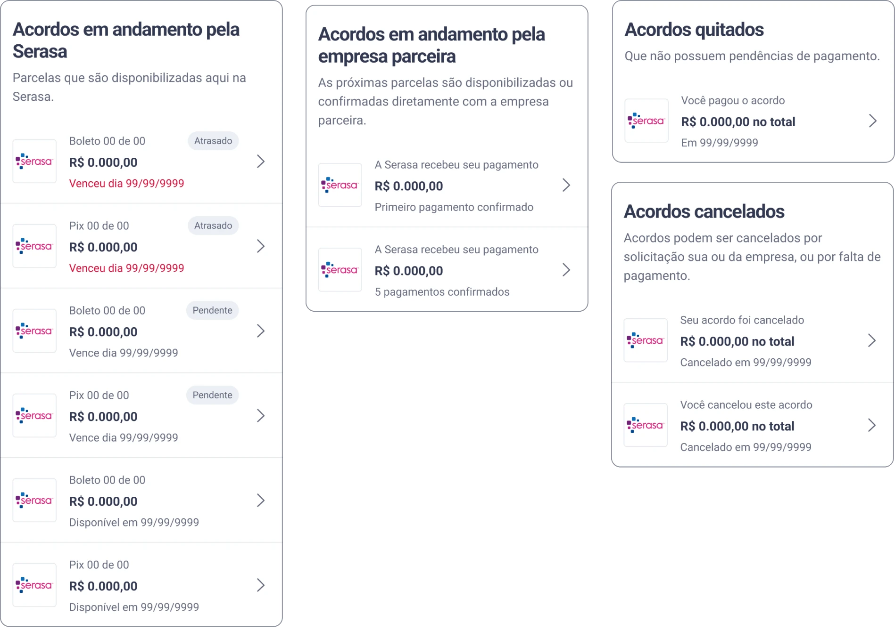
Four sections, ordered by what needs action
The list became four sections: agreements in progress with Serasa, in progress with the partner company, paid, and cancelled. Inside the first one, overdue payments come first, then pending ones, then payments that are not available yet, each sorted by due date. We explored other orderings, and this was the most logical for both sides: people see at a glance what needs their action, and the business reduces defaults from people who could not find what they owed.
Sections with nothing in them do not appear. The partner section only shows for people who have, or had, that kind of agreement.
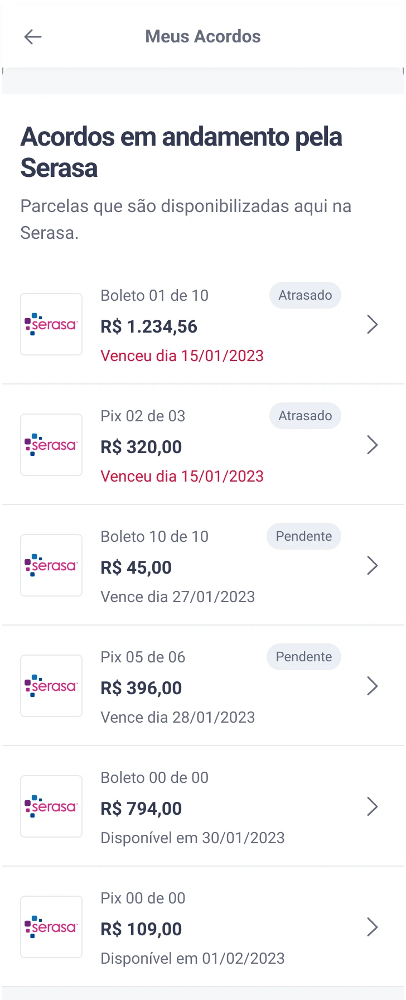
- In progress with Serasa. Installments paid through Serasa. When there is nothing in progress, the whole section is hidden.
- Overdue first. Agreements with an overdue payment open the list, so what needs action is the first thing people see.
- Then pending. Agreements with a payment coming up, sorted by due date.
- Not available yet, last. Payments that cannot be made yet, with the date they open.
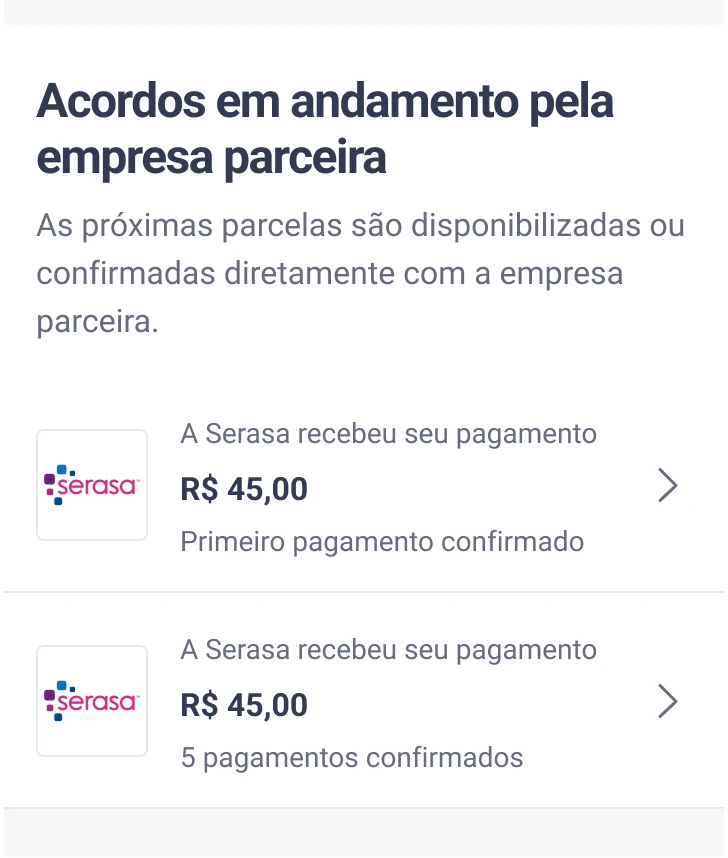
- In progress with the partner company. The next installments are issued or confirmed by the partner. The section only shows for people who have, or had, this kind of agreement.
- First installment paid through Serasa, waiting for the partner company to update the agreement.
- “Finished”, but not closed. Every installment was paid through Serasa, and the partner has not yet confirmed the last one.
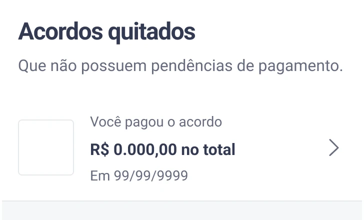
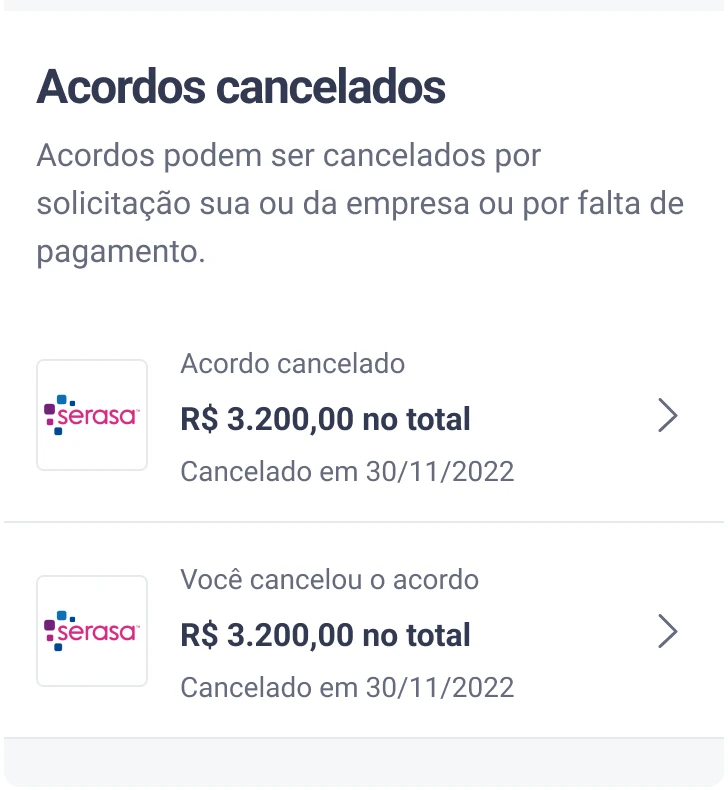
A short card, with the rest one step away
The list became a quick view of each agreement, and everything else moved to the agreement’s details page. People who wanted more could open it; everyone else was not slowed down. Some stakeholders resisted taking information out of the list. After the first rollout showed no negative impact, the resistance faded.
We removed the payment progress bar
The old details page showed a bar with how much had been paid and how much was left. It looked helpful, but it raised more questions and more bug reports than it answered, so it went away. The agreement value and the current installment stay on the page as plain values.
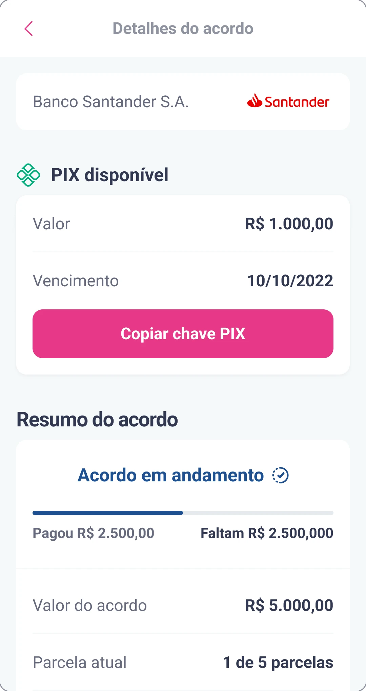
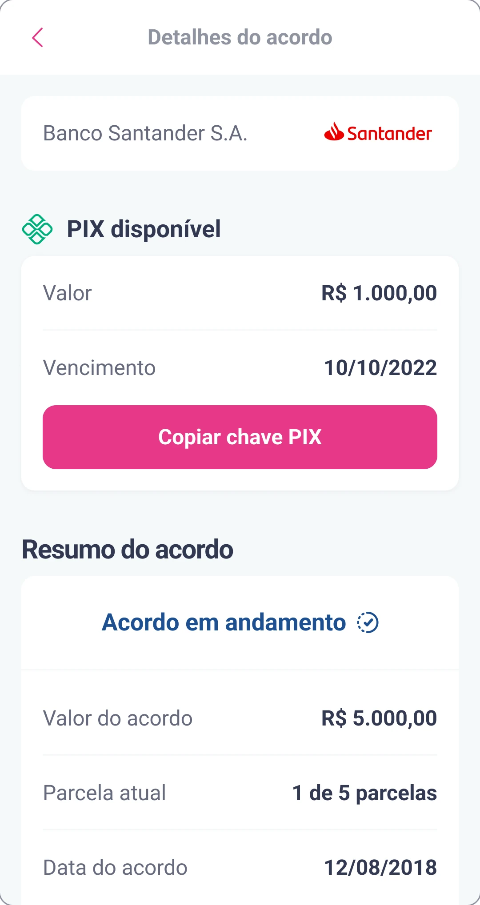
One vocabulary for web and app
Web and app used different labels for the same actions. We picked one term for each, and dropped the ones built on “see”, which assume the person can.
| Before | After |
|---|---|
| ver detalhes, mais detalhes, ver acordosee details, more details, see agreement | detalhesdetails |
| ofertas, propostasoffers, proposals | propostasproposals |
Status names got the same treatment. Two statuses from the service, Canceled and Broken, reached people as the same message, though they mean different things: one was the person’s choice, the other was not. Each got its own wording, and the broken one tells people who to contact.
| From the service | Meaning | In the list | In the details |
|---|---|---|---|
| Canceled | The person cancelled the agreement | Você cancelou o acordoYou cancelled the agreement | Você cancelou este acordoYou cancelled this agreement |
| Broken | Broken by missed payments or by the partner company | Acordo canceladoAgreement cancelled | Seu acordo foi cancelado. Para mais informações, entre em contato com [empresa parceira]Your agreement was cancelled. For more information, contact [partner company] |
One tested version, refined in copy
We tested a single version with 138 participants. The adjustments after the test were small, and most of them were changes to the copy.
States and edge cases
With less on the card, the details page had to explain each situation on its own: who is handling the agreement, why it was cancelled, and when it is done.
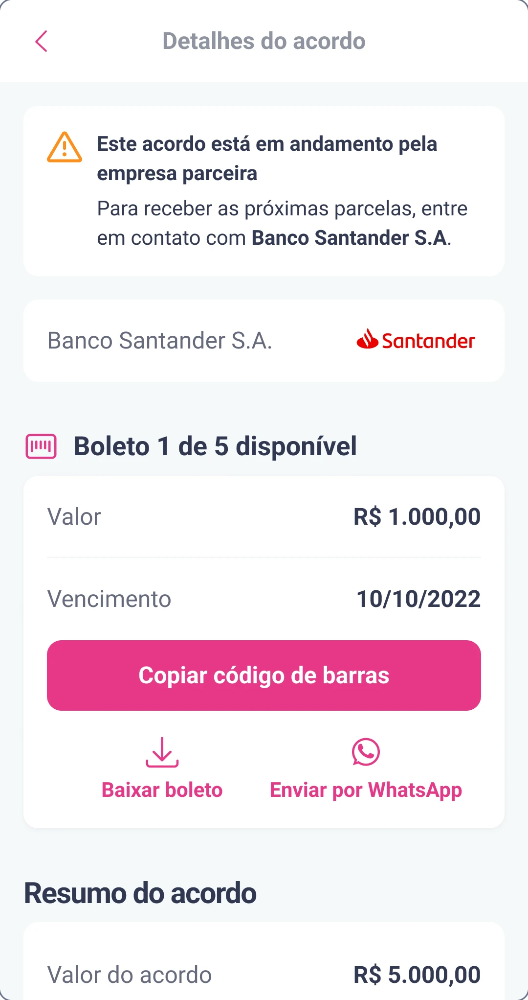
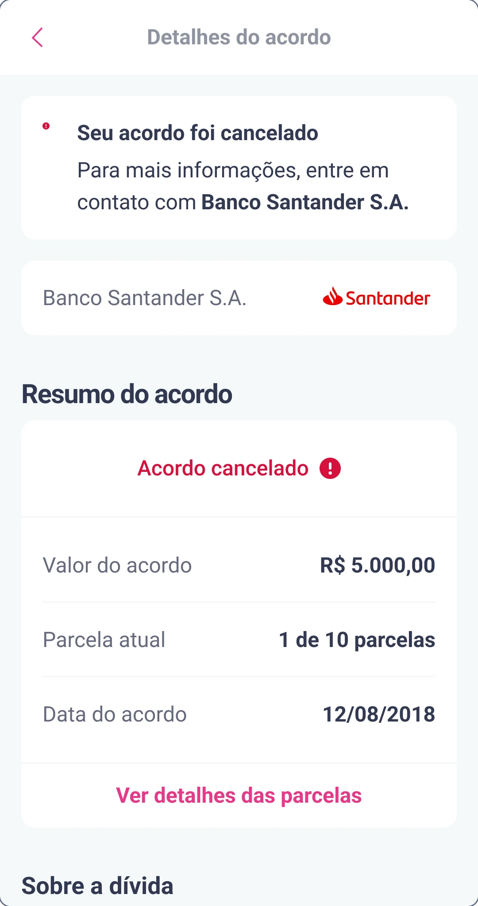
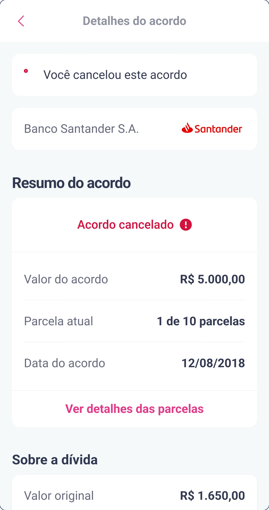
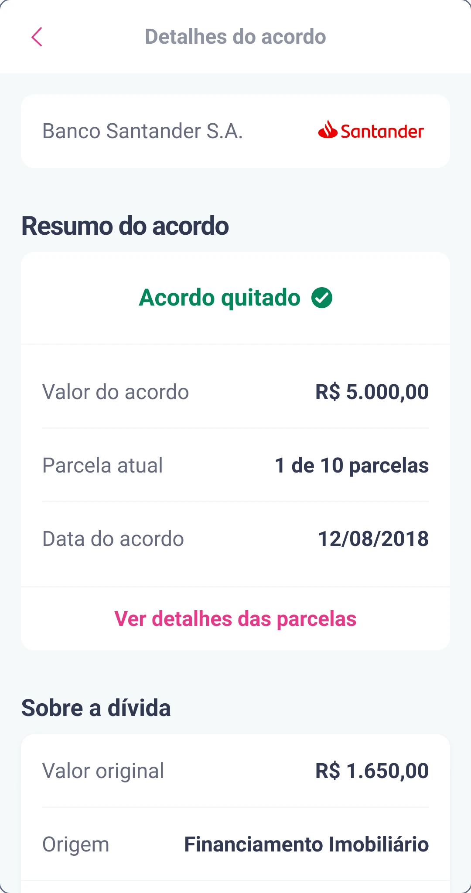
The empty list also changes with context. If the person has proposals waiting, it points to them; if not, it points to other Serasa services.
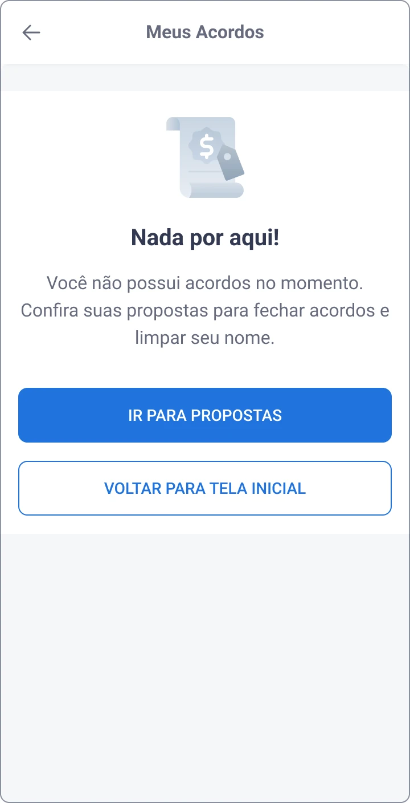
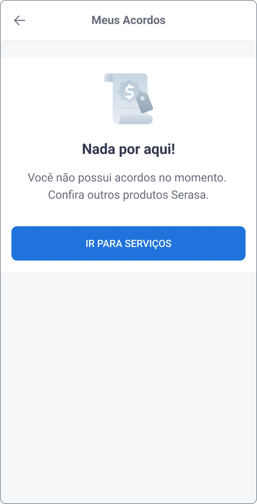
Outcome
The new list launched on web and in the app at the same time, in January 2023. In the usability tests, most people could find their overdue payments and explain the details of their agreement. The two reductions below are projections from product data, not measured results, and I no longer have the post-launch numbers.
- found overdue payments and explained their agreement, in testing
- 78%
- crashes, expected
- −50%
- agreement breakage, expected
- −5%
If I were measuring it again, I would track the crash rate, the share of agreements paid on time, and how many people reach the page and leave without paying or opening a bank slip.
More work
-
Unrecognized Debts
Half the people offered a settlement did not recognize the debt. Brand names and a plain explanation of who held it raised understanding by 23% in an A/B test.
-
Consent & Invitation Journey via WhatsApp
An informal WhatsApp channel with no opt-in became a consented journey designed around LGPD, written in three languages and made to be replicated.